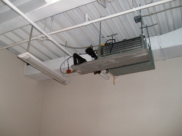

Электромонтаж дачи в Ленинградской обл..
Качественный электромонтаж в Санкт-Петербурге и ленобласти, стаж 12 лет. Частный электрик, недорого и качественно.
Николай.

Дача современного человека - это уже не вагончик, стоящий посреди грядок и емкостей с водой. Чаще всего это - благоустроенный коттедж или деревянный сруб, стоящий на озелененном участке, который требует подсветки и ухода. Осветить можно и небольшой рукотворный декоративный пруд, и бассейн, и подъездную дорожку к даче, не говоря уже о самих помещениях. Если вы задумали осуществить электромонтаж дачи, пригласите настоящего профессионала, то есть меня.
Мой опыт работы позволяет мне сразу оценить всю важность ситуации и объем выполняемых работ, порекомендовать то или иное оборудование, обговорить важные тонкости и нюансы предстоящей работы.
Посетите страницу – пригласить электрика на дачу.
Пристально следя за новыми методиками работы в электромонтажной отрасли, инновациями в энергосберегающей сфере (изучая новые материалы и инструменты, появляющиеся на рынке) я могу не только поменять пробитый шнур или укрепить выпадающую розетку, но и создать проводку на Вашей даче "с нуля".
Дача сегодня имеет все приборы и технику, что и дом. Именно поэтому ее стоит уберечь от замыканий, возгораний и других проблем, которые возможны при возрастании нагрузки на сеть.
Изначально стоит определиться с тем, как именно будет пролегать проводка - внутри стены или на ее поверхности (если стены из дерева).
Какие факторы влияеть на цены электромонтажа дача?
Затем стоит обратить пристальное внимание на материалы, кабеля, проводку, счетчики, подрозетники, которые необходимо приобрести (в зависимости от нагрузки).
Следующим пунктом я считаю равномерное распределение нагрузки по всем помещениям дачи, в зависимости от их функционального назначения.
Особое внимание стоит уделить пожарной и охранной сигнализации, освещению зоны, которая непосредственно связана с водой.
Стоимость моих услуг по электромонтажу на Вашей даче будет зависеть от следующих критериев:
- сложности и объема работ;
- выбранных заказчиком материалов;
- сроках выполнения.
Я гарантирую высокое качество выполняемых работ и полную безопасность Вашей семьи, к тому же осуществляю наблюдательную деятельность за объектами, на которых выполнял электромонтажные работы. Это позволяет заказчику чувствовать себя уверенно и вольготно, а мне обеспечивает достойную репутацию.
 Поменять проводку в квартире.
Поменять проводку в квартире. Сколько будут стоить материалы.
Карта сайта.
Замена электропроводки в панельном доме.
Расценки на электропроводку квартир.
Замена проводки в хрущевке.
Электромонтаж в частном доме.
Электрика в загородном доме.
Сколько стоит замена электропроводки в двухкомнатной квартире?.
Сколько стоит проложить проводку в 3 ком квартире?
Сколько стоит проложить проводку в четырех комнатной квартире?
Сколько стоит сделать внутреннюю проводку?.
Стоимость штробление стен.